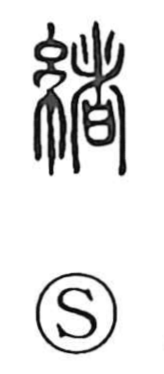

緒

Kun: o | On: sho, cho
beginning ・ end of a thread ・ cord ・ strap ・ clue ・ remainder ・ feelings
Explanation
緒 combines 糸, thread, with 者 as its phonetic. 者 carries an association with blocking or stopping up, and 緒 is the end at which threads are tied and held. The concrete object is a thread-end or fastening point.
An accessible end allows one to take hold of a whole length. From it come the beginning of an undertaking and the first clue by which a matter can be pursued. A remaining length also gives the uses for a remainder or what is left over.
The image extends to the heart as its feelings loosen and disclose themselves, giving 心緒 and 情緒. In Japanese, 緒 also names a cord or thong, including the fastening that holds a sandal to the foot.